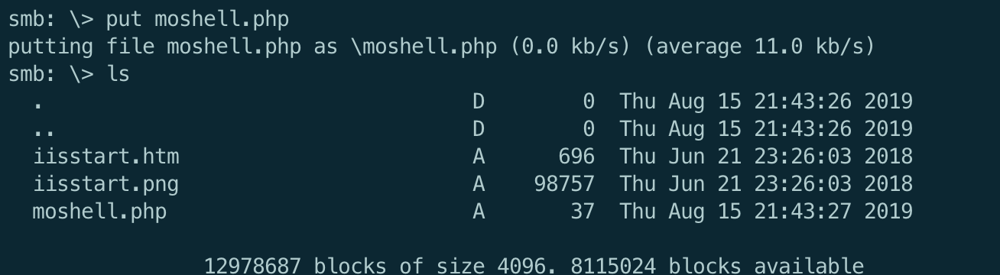

扫描端口信息：
从80web端口服务开始入手
存在登录页面和注册页面，注册用户信息后即可登录进去：
一番摸索后，利用SQL注入取得了进展：
注册用户的页面以'or 1 or'为用户名，注册后登录可看到以下页面信息：
由于靶机还开放了445smb，因此猜测其为smb共享的身份凭证信息，尝试登录：
且当前用户对当前目录具有可写权限，可上传文件信息：
发现了一个htm页面，但是访问发现并没有该页面：
由于靶机还开放了8808端口，猜测页面可能隶属于8808端口的web服务，尝试访问：
至此，一方面可利用SMB共享实现对web目录的写操作，另一方面又可web访问
因此，可上传webshell：

然后再上传一个静态编译好的nc二进制文件，利用webshell来获取user shell：
拿到user flag:
下一步尝试拿到管理员权限
在tyler用户桌面发现了可疑的lnk文件：bash.lnk
根据文件内的线索，发现其与windows\system32\bash.exe程序有关，而后者为linux平台常见的bash脚本，执行该程序：
显然，该bash用来在windows平台执行linux子系统(WSL ,Windows Subsystem for Linux)
在wsl的root历史命令中发现一下信息：
其中看到了管理员administrator的smb共享凭证信息
利用该凭证信息登录smbclient或者利用psexe均可拿到root flag: